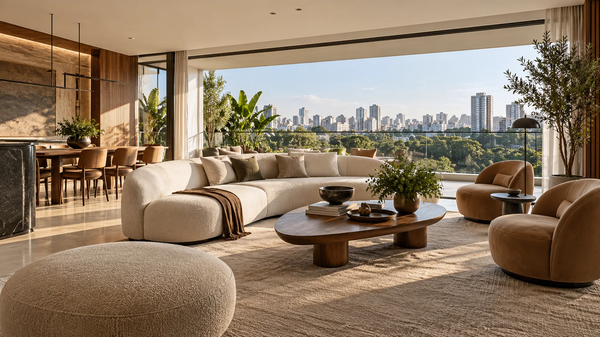
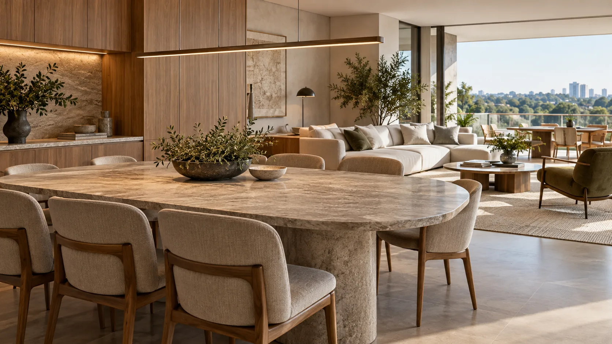

Experimentar
Apresentar ambientes, explorar a planta e demonstrar as opções de configuração previstas no projeto.
PARA INCORPORADORAS E CONSTRUTORAS
Transforme plantas em experiências que ajudam o cliente a entender, explorar e imaginar a vida no seu empreendimento.
Conheça a soluçãoExperiência virtual com gestão de projetos
e acompanhamento em cada etapa.

01 / UMA SOLUÇÃO COMPLETA
O DecoradoVirtual reúne a apresentação interativa do imóvel e a organização necessária para produzir, revisar e manter essa experiência.
A incorporadora acompanha o projeto. A equipe comercial ganha uma forma mais concreta de apresentar o empreendimento. O comprador explora os ambientes e visualiza possibilidades antes da obra concluída.
Apresentar ambientes, explorar a planta e demonstrar as opções de configuração previstas no projeto.
Organizar etapas, responsáveis e solicitações, com histórico das versões e das aprovações.
Contar com acompanhamento no briefing, nas revisões e na preparação da experiência para uso comercial.

02 / MAIS CLAREZA PARA DECIDIR
Uma planta mostra a distribuição. A experiência virtual ajuda a perceber a relação entre os espaços e a imaginar diferentes formas de morar.
Use a experiência como convite para conhecer o empreendimento e aprofundar o interesse em uma planta, um ambiente ou uma possibilidade de decoração.
Acesso remoto pelo navegador previsto no escopo, sujeito à validação técnica e à capacidade contratada.
03 / GESTÃO COM VISIBILIDADE
Cada pedido tem contexto. Cada revisão tem histórico. A versão apresentada ao cliente passa por uma aprovação definida.
Briefing, tarefas e cronograma organizados para tornar claro o andamento da produção e o que depende de cada participante.
Solicitações e comentários ligados ao projeto, com versões identificadas para apoiar a revisão e evitar dúvidas sobre o material aprovado.
Acompanhamento para alinhar materiais, tratar ajustes e preparar a equipe para apresentar a experiência conforme o escopo contratado.
A representação visual respeita as informações aprovadas do empreendimento. Alternativas de decoração são identificadas como possibilidades, sem alterar as especificações oficiais do imóvel.
04 / DO BRIEFING À APRESENTAÇÃO
Objetivo comercial, plantas, materiais e público do empreendimento.
Ambientes, acabamentos e interações conforme o escopo acordado.
Comentários, ajustes e aprovação da versão de apresentação.
Preparação para uso comercial, com suporte e condições de acesso definidas.
05 / SEU PRÓXIMO LANÇAMENTO
Um piloto permite avaliar a experiência com sua equipe comercial, ajustar o atendimento e definir o melhor formato de operação.
Baixar apresentação comercial01 Escolher uma planta e os ambientes prioritários.
02 Definir as configurações e o roteiro de apresentação.
03 Alinhar revisões, suporte e condições de acesso.
04 Avaliar a clareza para o comprador e a utilidade para o corretor.
DÚVIDAS FREQUENTES
A proposta combina produção da experiência virtual, gestão das etapas e acompanhamento. Ambientes, interações, revisões e suporte são definidos para cada empreendimento.
O atendimento remoto faz parte da proposta. O acesso interativo pelo navegador está previsto e depende da validação técnica no piloto e das condições de conexão e capacidade contratada.
As opções de materiais, decoração e configuração são definidas no briefing e implementadas conforme o escopo. Alternativas visuais são diferenciadas das especificações oficiais do imóvel.
Combine critérios com a equipe: facilidade de apresentação, compreensão da planta, dúvidas dos compradores e continuidade do atendimento. Metas de conversão devem ser medidas no contexto real da incorporadora.